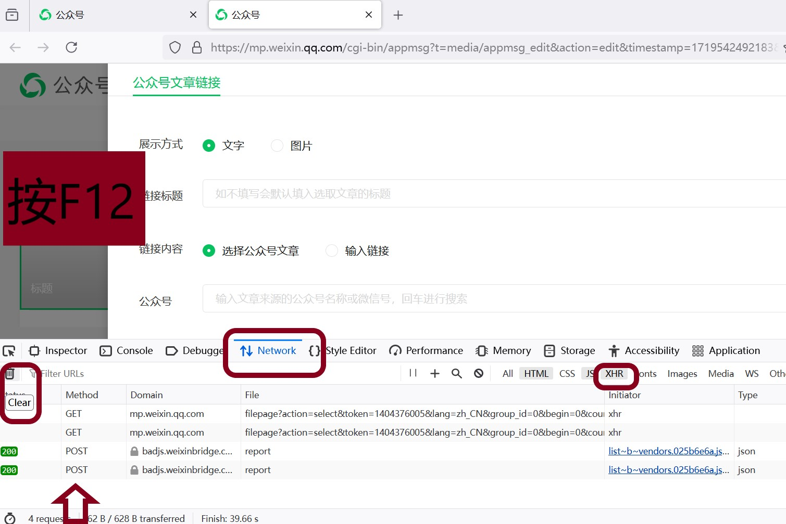
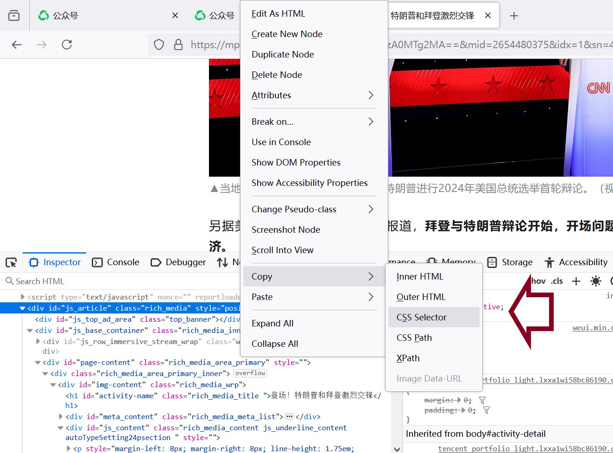

基本的爬虫应该是程序员的必备技能，一方面有实际应用价值，比如批量下载感兴趣的资源，自动关注感兴趣的信息（甚至自动完成抢购等操作），另一方面也能锻炼能力，简单的爬虫覆盖了很多应知应会的基础知识。
最近工作中要持续获取不同微信公众号的文章进行资料搜索分析，终于有了足够的动力和机会好好学习体验并总结。意外惊喜的发现，用Golang来实现这个功能居然这么简洁，再次为Golang生态的优雅风格折服。
思路
参考了网上的文章，最后实现的思路可以概括为4点：
- 获取公众号链接入口。既然是爬虫，那必须得有网页的入口，所以网上给出的思路大多指向通过自己申请一个公众号，然后用公众号账号进入微信的公众号平台进行网页操作，通过分析网页请求获得链接入口。
- 获取公众号文章链接列表。由于只需要获取特定公众号的文章，所以主要是获取文章的链接列表然后逐个访问。与其说爬虫，更像一个循环访问的程序，不需要深度和广度遍历等处理。
- 获取文章内容。因为网页大多都是动态加载内容的，所以通过简单发起请求获得返回这样的方式很难获取文章的内容，可借助无头（headless）浏览器模拟人工操作的方式，让程序驱动下的浏览器加载页面，再获取最终加载完成的页面中的文本和图片等内容。
- 获取认证信息实现自动化。通过劫持的方式拦截无头浏览器的请求，获取其中的cookie和token这些登陆认证后的信息，以便后续发起爬虫请求的时候带上这些信息通过服务器的认证检查。因此，每次启动爬虫都要模拟人工操作，手工登陆一下微信公众号平台，还有就是控制爬虫的访问频率，避免触发服务器的反爬虫处理。
方案
思路的第一第二点，可以参考知乎上的这篇文章：只需十几行代码，轻松爬取公众号文章！
思路的第三第四点，可以参考go-rod的说明文档
完整的golang实现代码可以参考github上的这个项目【TODO】
步骤
为了体现原创性，还是从头到尾操作一遍，截图说明做个分享啦。以下通过Firefox浏览器操作，其它浏览器类似。
一、获取公众号链接入口。
打开微信公众号平台网页（https://mp.weixin.qq.com/），注册账号后，扫码登陆。由于必须扫码，所以后续爬虫的每次登陆，都无法避免需要手工扫码操作一次。
选择【转载】
选择【超链接】
选择【选择其他公众号】
按【F12】弹出调试窗口，选择【Network】查看网络信息，选择【XHR】查看发送的http请求，比如下面的【GET】和【POST】，然后先清理掉，以便后面直接看到操作后的第一条记录。
在【公众号】那里输入想下载文章的公众号，比如【参考消息】，点击后面的【搜索】，出现搜索结果，同时下面的调试窗口中出现了一条【GET】请求，点击它，则右边出现详细信息，可以看到完整的链接：
GET https://mp.weixin.qq.com/cgi-bin/searchbiz?action=search_biz&begin=0&count=5&query=参考消息&token=1404376005&lang=zh_CN&f=json&ajax=1
至此，我们获得了有效的链接入口。
二、获取公众号文章链接列表。
在上图中，选择第一条搜索结果【参考消息】，则出现了文章列表，同时，下面调试窗口中出现了新的【GET】请求，同样点击该请求，调试窗口右侧的【Headers】往下拉，可以看到【fakeid】的值是【MjM5MzA0MTg2MA==】，这个字段就是【参考消息】在系统中的ID，可以记录下来以便后续爬虫中作为下载不同公众号的方法的参数使用。
再次点击刚刚的【GET】请求，鼠标右键【Copy Value】，【Copy URL】，获得http请求的URL：https://mp.weixin.qq.com/cgi-bin/appmsgpublish?sub=list&search_field=null&begin=0&count=5&query=&fakeid=MjM5MzA0MTg2MA%3D%3D&type=101_1&free_publish_type=1&sub_action=list_ex&token=1404376005&lang=zh_CN&f=json&ajax=1
这个请求实际上就是一个获得某个公账号的文章列表的API，我们只需要替换上面的fakeid字段为其它公众号的ID就能通过编写程序循环发起请求获得所有需要的公众号的最近的文章列表。这里主要关注token字段，这个字段与登陆认证有关，每次重新登陆发起新的爬虫都需要更新这个字段。
如果我们点击右下角的下一页，可以看到对应的请求如下：
https://mp.weixin.qq.com/cgi-bin/appmsgpublish?sub=list&search_field=null&begin=5&count=5&query=&fakeid=MjM5MzA0MTg2MA%3D%3D&type=101_1&free_publish_type=1&sub_action=list_ex&token=1404376005&lang=zh_CN&f=json&ajax=1
差别主要是begin字段，用来控制从哪一条开始查，而count字段则是控制一次查询多少条。这里的条，是以一次发布推送为单位的，一次发布推送实际又可以包含多篇文章，具体从手机上关注的公众号推送消息看就能理解了。
鼠标右键【Copy Value】，【Copy as cURL】，可以获得完整的请求内容，包括header等字段，以便编写程序。这里还要特别关注header中的cookie字段，这个字段也与登陆认证有关，所以每次重新登陆发起新的爬虫也都需要更新这个字段。
鼠标右键【Copy Value】，【Copy Response】，可获得详细的返回内容。这里实际上是一个json格式的报文，包含了文章的具体链接，比如：
\\”link\\”:\\”http:\\\/\\\/mp.weixin.qq.com\\\/s?__biz=MjM5MzA0MTg2MA==&mid=2654480375&idx=1&sn=4cf3fbd3660ebad6bf39e8afcf3255e6&chksm=bd519b5c8a26124a45e389199818de9bcf0a3aeb91ca2e53c07992f8f1d5d7342cee62b426ca#rd\\”
至此，我们获得了可以查不同公众号文章列表的API，通过调用该API能够获得某个公众号的文章列表信息，从中能够得到每一篇文章的实际链接地址。
程序实现参考如下：
1 | import ( |
调用例子：1
2
3
4
5
6
7
8
9
10
11
12
13
14
15
16
17
18
19func main() {
cookie := `请自己按照上述方法获取后重新赋值`
token := `请自己按照上述方法获取后重新赋值`
fakeids := []string{
"请自己按照上述方法获取后重新赋值",
"请自己按照上述方法获取后重新赋值",
}
i := 0
for _, fakeid := range fakeids {
arts := getArticleList(cookie, token, fakeid)
for _, art := range arts {
fmt.Println(art.Title, art.Time, art.Class, art.Digest)
}
i++
time.Sleep(time.Second * 10)
}
}
三、获取文章内容。
首先打开任意一篇文章，选择其中的文字，然后鼠标右键，【Inspect】，打开调试窗口。
调式窗口中的【Search HTML】会定位在所选文字所在的html元素附近，在调试窗口移动鼠标，可以看到页面中也会对应显示所选元素对应的区域，由此我们可以定位到【js_article】或【js_content】元素。
选择【js_article】元素，鼠标右键，【Copy】，【CSS Selector】，得到【#js_article】，这个值将用于后续代码中获取该元素下的文本内容。

go-rod十分的简单易用，具体可以看官网上的说明文档，这里就直接上代码了。下面只实现了获取文章的文本内容，图片内容后续再补充啦【TODO】。1
2
3
4
5
6
7
8
9
10
11
12
13
14
15import (
"fmt"
"github.com/go-rod/rod"
)
func visit(url string) {
browser := rod.New().MustConnect()
defer browser.MustClose()
page := browser.MustPage(url)
page.MustWaitStable()
el := page.MustElement("#js_article")
fmt.Println(el.MustText())
}
调用例子：1
2
3func main() {
visit("http://mp.weixin.qq.com/s?__biz=MjM5MzA0MTg2MA==&mid=2654480375&idx=1&sn=4cf3fbd3660ebad6bf39e8afcf3255e6&chksm=bd519b5c8a26124a45e389199818de9bcf0a3aeb91ca2e53c07992f8f1d5d7342cee62b426ca#rd")
}
四、获取认证信息实现自动化。
- 为了获取登陆认证后的cookie以及token实现后续程序的自动执行，首先要模拟登陆操作。由于微信要求必须扫描二维码，因此这一步必须手工执行。根据go-rod的说明文档，可以通过在程序执行时，添加【-rod=show,devtools】参数，显示浏览器并进行调试，因此我们可以执行命令：【.\编译后的程序名.exe “-rod=show,devtools”】，进入如下界面。然后通过前面介绍的方法，获得【账户】输入框的元素定位：【#header > div.banner > div > div > div.login__type__container.login__type__container__account > form > div.login_input_panel > div:nth-child(1) > div > span > input】
代码如下：1
2
3
4
5
6
7
8
9
10
11
12
13
14
15
16browser := rod.New().NoDefaultDevice().MustConnect()
page := browser.MustPage("https://mp.weixin.qq.com/")
page.MustWindowFullscreen()
page.MustWaitStable()
el := page.MustElement("#header > div.banner > div > div > div.login__type__container.login__type__container__scan > a")
el.MustClick()
el = page.MustElement("#header > div.banner > div > div > div.login__type__container.login__type__container__account > form > div.login_input_panel > div:nth-child(1) > div > span > input")
el.MustInput("微信公众号账号")
el = page.MustElement("#header > div.banner > div > div > div.login__type__container.login__type__container__account > form > div.login_input_panel > div:nth-child(2) > div > span > input")
el.MustInput("微信公众号账号的密码")
el = page.MustElement("#header > div.banner > div > div > div.login__type__container.login__type__container__account > form > div.login_btn_panel > a")
el.MustClick()
//等待60秒，以便手工扫码登陆
time.Sleep(time.Second * 60)
page.MustWaitStable()
代码如下：1
2
3
4
5
6
7
8
9
10
11
12
13
14
15
16
17
18
19//劫持拦截
router := browser.HijackRequests()
f := func(ctx *rod.Hijack) {
ctx.MustLoadResponse()
req := ctx.Request.Req()
cookie := fmt.Sprintf("%s", req.Header["Cookie"])
cookie = cookie[1:]
l := len(cookie)
cookie = cookie[:l-1]
token := ctx.Request.URL().String()
i := strings.LastIndex(token, "token=")
token = token[i+6:]
i = strings.IndexRune(token, '&')
token = token[:i]
}
router.MustAdd("*/appmsgpublish*", f)
go router.Run()
至此，我们获得了cookie以及token，可以与前面的内容结合实现自动化操作。
获取认证信息的完整代码如下：1
2
3
4
5
6
7
8
9
10
11
12
13
14
15
16
17
18
19
20
21
22
23
24
25
26
27
28
29
30
31
32
33
34
35
36
37
38
39
40
41
42
43
44
45
46
47
48
49
50
51import (
"fmt"
"github.com/go-rod/rod"
"time"
"strings"
"sync"
)
func getAuth() (token, cookie string) {
browser := rod.New().NoDefaultDevice().MustConnect()
var w sync.WaitGroup
w.Add(1)
router := browser.HijackRequests()
f := func(ctx *rod.Hijack) {
ctx.MustLoadResponse()
req := ctx.Request.Req()
cookie := fmt.Sprintf("%s", req.Header["Cookie"])
cookie = cookie[1:]
l := len(cookie)
cookie = cookie[:l-1]
token := ctx.Request.URL().String()
i := strings.LastIndex(token, "token=")
token = token[i+6:]
i = strings.IndexRune(token, '&')
token = token[:i]
w.Done()
}
router.MustAdd("*/appmsgpublish*", f)
go router.Run()
page := browser.MustPage("https://mp.weixin.qq.com/")
page.MustWindowFullscreen()
page.MustWaitStable()
el := page.MustElement("#header > div.banner > div > div > div.login__type__container.login__type__container__scan > a")
el.MustClick()
el = page.MustElement("#header > div.banner > div > div > div.login__type__container.login__type__container__account > form > div.login_input_panel > div:nth-child(1) > div > span > input")
el.MustInput("微信公众号账号")
el = page.MustElement("#header > div.banner > div > div > div.login__type__container.login__type__container__account > form > div.login_input_panel > div:nth-child(2) > div > span > input")
el.MustInput("微信公众号账号密码")
el = page.MustElement("#header > div.banner > div > div > div.login__type__container.login__type__container__account > form > div.login_btn_panel > a")
el.MustClick()
w.Wait()
page.MustWaitStable()
return
}
总结
上述操作不仅展示了批量下载微信公众号文章的功能，过程中用到的技术，比如F12分析网页请求、go-rod的使用等，都是很有用很好玩的技术，相信以后一定还会有很多使用的机会。